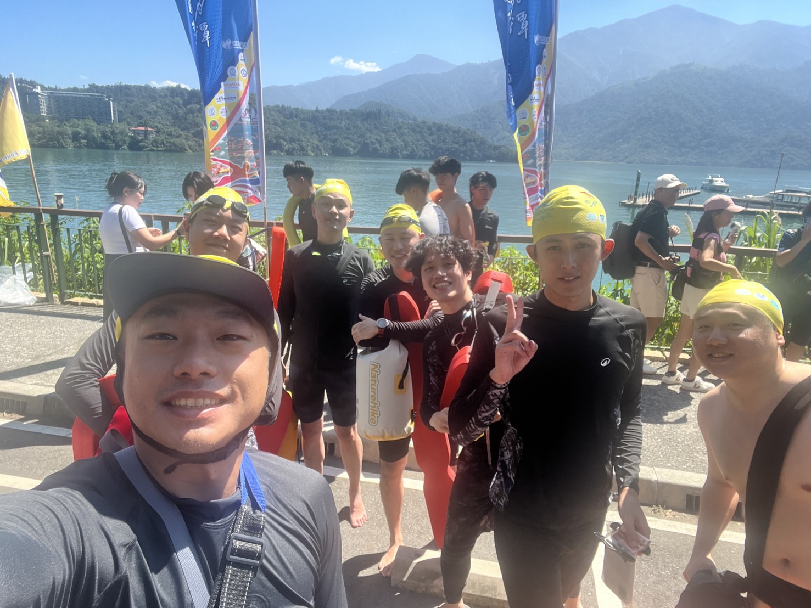
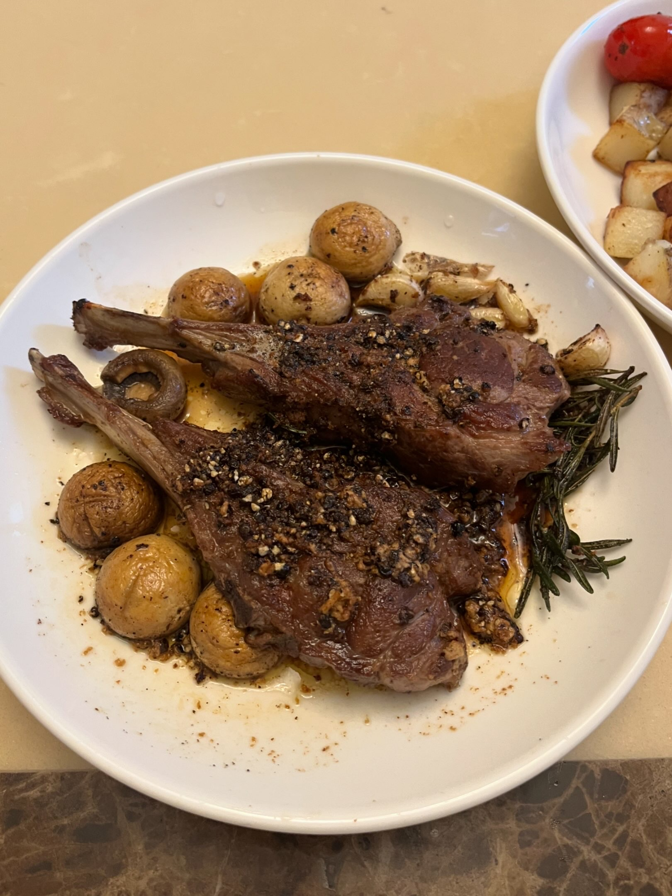
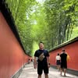
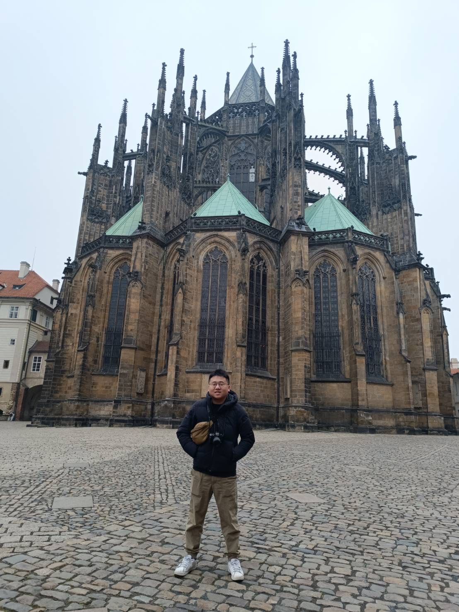

Beyond Research
A little more
about me.
Outside of research, I enjoy cooking, exploring new places,
swimming, and playing table tennis.
In the water
Across Sun Moon Lake.
Taiwan · 2025
≈ 3 km

I enjoy swimming. In 2025, I completed the approximately 3 km swim across Sun Moon Lake — a memorable day in the water and a beautiful setting to share with fellow swimmers.
About the 2025 swim ↗In the kitchen
Cooking.
Instagram
Food & cooking@lctao.cook

I enjoy cooking and sharing what I make.
See what’s cookingOut exploring
Travel.
Instagram

Places & travels@lctao.travel

I also enjoy traveling and keeping a record of the places I visit.
Explore my travelsAt the table
And a game of table tennis.
When I’m on dry land, I also enjoy playing table tennis.